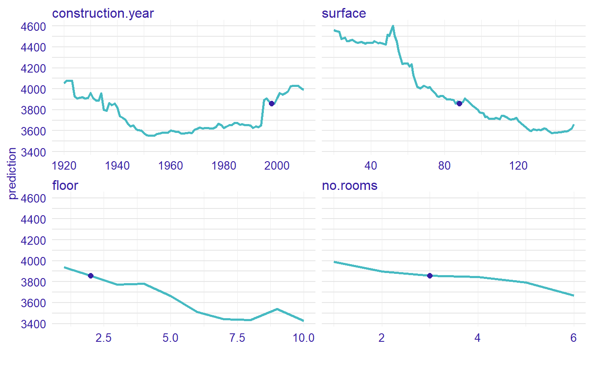
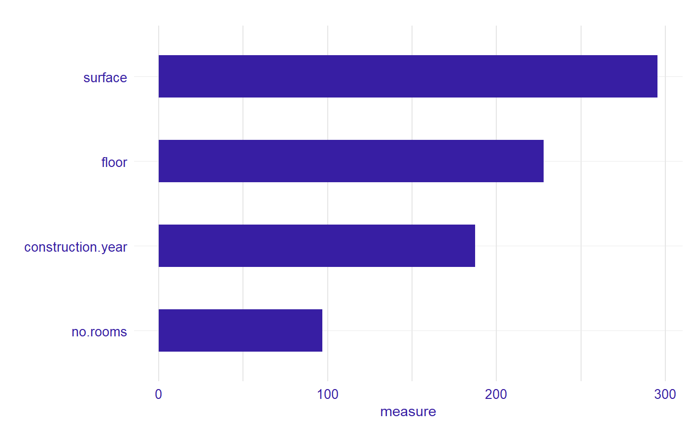

vignettes/vignette_apartments.Rmd
vignette_apartments.RmdIn this vignette we present measure for random forest regression model.
We work on Apartments dataset from DALEX package.
#> m2.price construction.year surface floor no.rooms district
#> 1 5897 1953 25 3 1 Srodmiescie
#> 2 1818 1992 143 9 5 Bielany
#> 3 3643 1937 56 1 2 Praga
#> 4 3517 1995 93 7 3 Ochota
#> 5 3013 1992 144 6 5 Mokotow
#> 6 5795 1926 61 6 2 SrodmiescieNow, we define a random forest regression model and use explain from DALEX.
library("randomForest")
apartments_rf_model <- randomForest(m2.price ~ construction.year + surface + floor +
no.rooms, data = apartments)
explainer_rf <- explain(apartments_rf_model,
data = apartmentsTest[,2:5], y = apartmentsTest$m2.price)
#> Preparation of a new explainer is initiated
#> -> model label : randomForest ( [33m default [39m )
#> -> data : 9000 rows 4 cols
#> -> target variable : 9000 values
#> -> model_info : package randomForest , ver. 4.6.14 , task regression ( [33m default [39m )
#> -> predict function : yhat.randomForest will be used ( [33m default [39m )
#> -> predicted values : numerical, min = 2125.223 , mean = 3517.441 , max = 5361.727
#> -> residual function : difference between y and yhat ( [33m default [39m )
#> -> residuals : numerical, min = -1281.673 , mean = -5.917059 , max = 2144.836
#> [32m A new explainer has been created! [39mWe need to specify an observation. Let consider a new apartment with following attributes. Moreover, we calculate predict value for this new observation.
Let see the Ceteris Paribus Plots calculated with ceteris_paribus() function.
library("ingredients")
profiles <- ingredients::ceteris_paribus(explainer_rf, new_apartment)
plot(profiles) + show_observations(profiles)
Now, we calculated a measure of local variable importance via oscillation based on Ceteris Paribus plot. We use variant with all parameters equals to TRUE.
library("vivo")
measure <- local_variable_importance(profiles, apartments[,2:5],
absolute_deviation = TRUE, point = TRUE, density = TRUE)
For the new observation the most important variable is surface, then floor, construction.year and no.rooms.